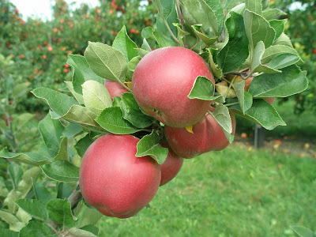
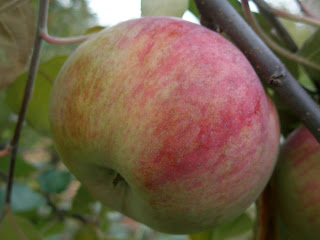
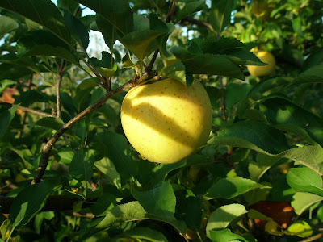

The Farm
-

Arkansas Black
Arkansas Black is an heirloom apple that originated in Benton county, Arkansas. Quite possibly raised in the orchard of Mr. Brathwaite, the first fruit was harvested around the year 1870. In some cases Arkansas Black has erroneously been listed as identical to the variety simply known as Arkansas, due to the similarity in name and origin, when in fact the trees and fruit bear little resemblance to each other..
-

Cortland
The Cortland has been around since 1898, when it was born in Geneva, New York. After the advent of the McIntosh breeders began to experiment with hybrids through grafting. The Cortland was one of the first successes, the result of a union between a McIntosh and a Ben Davis. .
-

The Golden Apple
The Goldrush apple is a product of nature, but also of science, more specifically of apple breeding, which has been the source of many new apple varieties over the past century. Unlike the Baldwin, McIntosh or Red Delicious, which all originated as chance seedlings, the Goldrush is the progeny of several existing varieties including Rome, Golden Delicious and a variety of crab apple, which were all intentionally crossed and recrossed over a series of generations to eventually yield what would become the Goldrush.